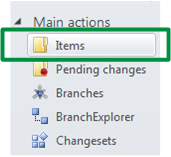
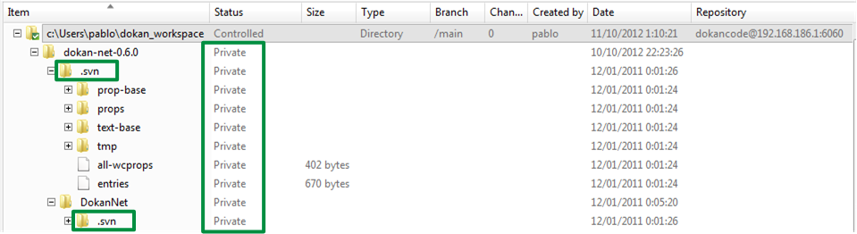
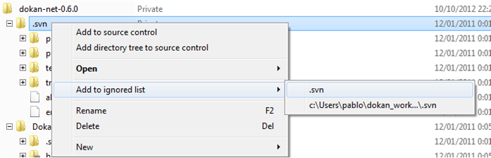
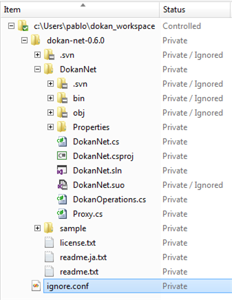

Take a look at the “items view” in your recently created workspace. Click on the “items view” on the “main actions” action bar:

Figure 1: Items View
And the “items view” will show up. Take a look at it and you’ll see how, right now, all files and directories are marked as “private” which means they’re not yet under Plastic SCM control.
Also take a look at the “.svn” folders. These are folders containing information coming from Subversion, the version control originally used by Dokan. We’re not interested on these folders so we’re going to add them to the “ignored list”.

Figure 2: Ignored list
In order to do that, right click on a “.svn” folder and click on “add to ignored list” as the figure below shows:

Figure 3: Add .svn ignored list
It means that all of the “.svn” directories and their contents will be “ignored”: Plastic won’t try to add them, not try to find changes inside them.
Repeat for the “.bin” and “.obj” subdirectories and “.suo” files and you’ll get something like this:

Figure 4: All ignored files
Now we’re ready to add the code into the version control, because we ensured that we’ll only add the code we’re interested on.